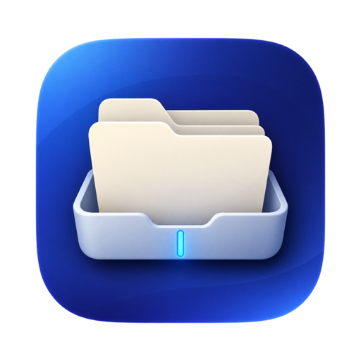
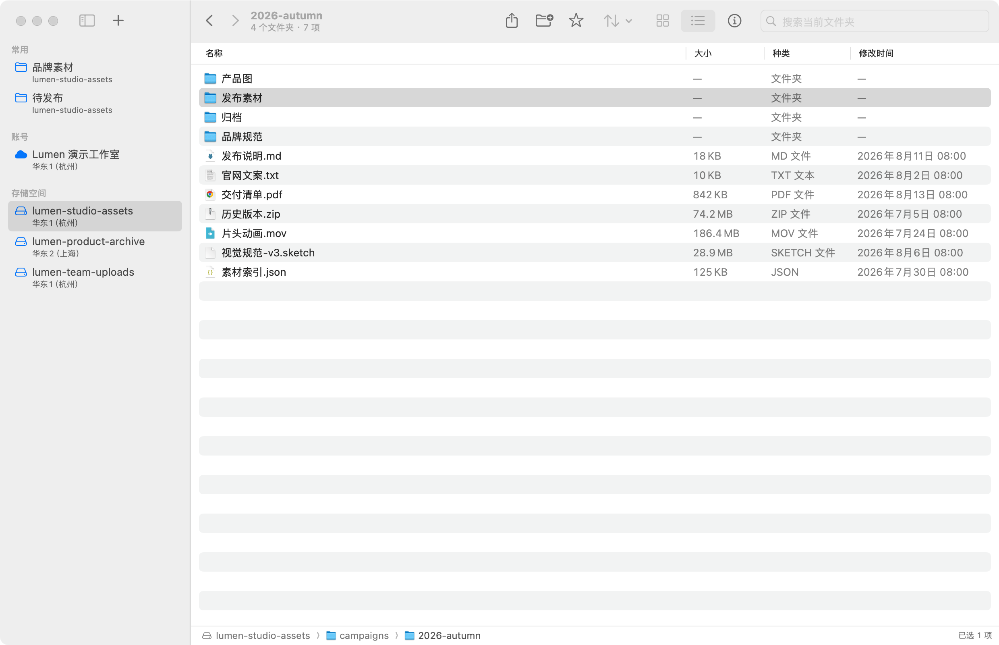
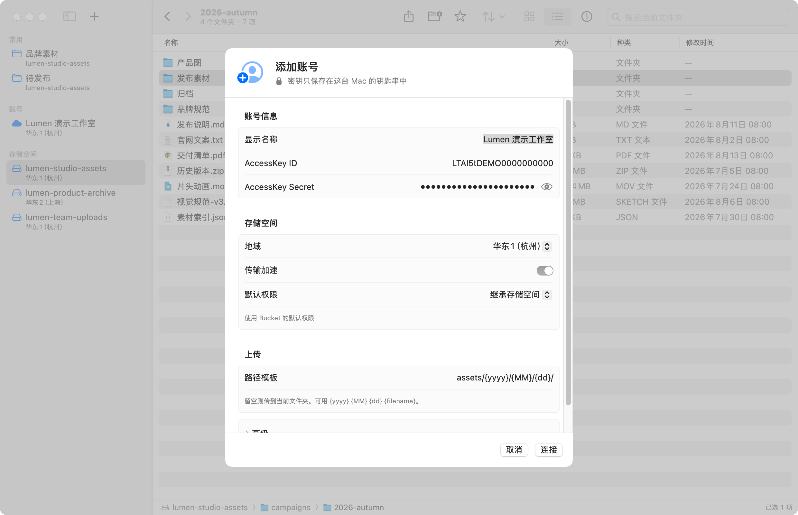

权限跟着 Bucket
新账号默认继承 Bucket 权限，不擅自改写对象 ACL；Secret 与 Token 只保存在 macOS 钥匙串。
原生 macOS · 独立开源
Lumen 是给 Mac 写的阿里云 OSS 客户端。搜索整个 Bucket，把文件拖回桌面；传到一半也能先停，回来接着传。路径、选择和快捷键都按 Mac 的习惯来。
Apple Silicon · macOS 15 或更高版本 · 当前版本可免费下载

01 / 一个窗口
账号、Bucket、路径和文件都在同一个窗口。单击选中，双击打开；常用目录可以钉在侧边栏。

浏览
在工具栏切换搜索范围，按类型、大小和时间筛选。扫整个 Bucket 时看得到进度，结果双击就回到所在目录。对象信息按 ⌘I 打开，平时不占地方。
整理
拖放、复制、移动和重命名都会先问过冲突。换到另一个 Bucket 再粘贴时，会先说清楚是云端复制，还是走这台 Mac。移动一定先复制完，再删原来的。
发布素材campaigns / 2026-autumn
待发布delivery / final
传输与分享
上传会记住已经传完的分片，下载会记住字节范围。暂停或退出后再打开，从停下的地方接着传。速度、剩余时间、限速和冲突策略都在传输窗口里。
发布素材保留 18 个子目录
完成片头动画.mov186.4 MB · 分片上传
属性
在对象菜单打开“对象属性”，可以改文件类型、缓存、下载文件名、自定义元数据和最多十个标签。保存后，这个对象立刻按新的来。
02 / 边界清楚
Lumen 把云端操作当作文件操作来对待：先确认范围，再执行；信息不完整时，宁可停下来。
新账号默认继承 Bucket 权限，不擅自改写对象 ACL；Secret 与 Token 只保存在 macOS 钥匙串。
复制、移动、重命名和撤销都会检查目标，不静默覆盖已有对象。
上传与下载核对 OSS 返回的 CRC64，校验通过后才完成任务。
软件内更新使用 Ed25519 验证安装包，安装后自动退出并重新打开。
03 / 开始使用
下载并安装打开 DMG，把 Lumen 拖入“应用程序”。
添加账号填写 RAM 子账号 AccessKey，选择地域和默认权限。
双击 Bucket从侧边栏进入存储空间，然后拖入文件。
建议使用权限最小化的 RAM 子账号。Lumen 是独立项目，并非阿里云官方产品。

04 / 常见问题
Lumen 是一款原生 macOS 阿里云 OSS 客户端，用来在 Mac 上浏览、整理、上传和下载对象。它是独立开源项目，不是阿里云官方产品。
Lumen 1.0.2 支持 Apple Silicon Mac，需要 macOS 15 或更高版本。
AccessKey Secret 和 STS Token 保存到 macOS 钥匙串。账号名称、地域等非敏感设置保存在本机偏好设置中。
会。在“Lumen → 检查更新…”中可以立即检查；发现新版本后，点击安装即可完成签名验证、替换并自动重新打开。
Bucket 开启版本控制时，刚删除的项目可以立即按 Command–Z 撤销。未开启则删除是永久的。
是。Lumen 采用 MIT License 开源，可以自由使用、修改和分发；使用时需保留版权与许可证声明。
不会。Lumen 专注对象浏览、整理、上传、下载与分享，不创建 Bucket，也不管理未完成分片等控制台资源。